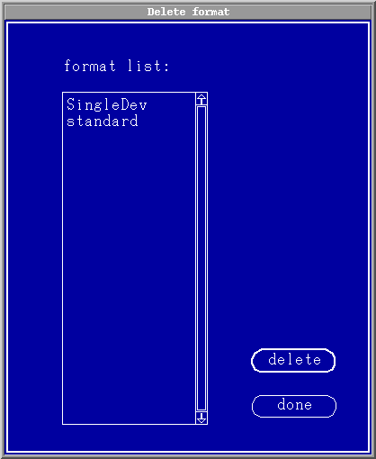

Deleting a Table Format
To delete an existing table format proceed as follows:
- In the Format pulldown menu pick the option delete format. The delete
format dialog box appears, see the figure below.

- Select the format name to delete from the format list:.
- Click delete.
You can delete one or more formats in one go.
- When you've finished deleting formats click done.